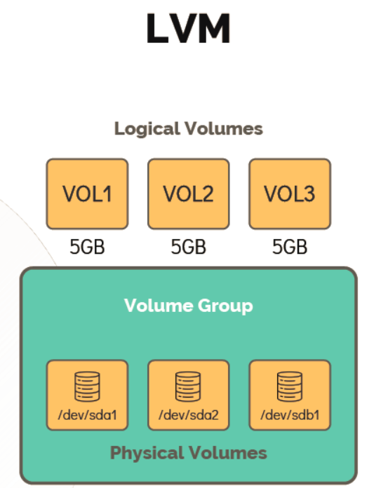
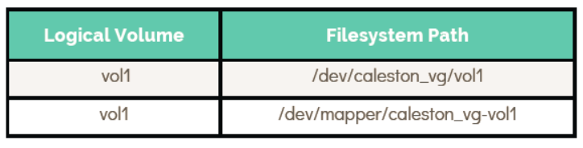

LOGICAL VOLUME MANAGER
- LVM allows grouping of multiple physical volumes, which are hard disks or partitions into a volume group.
- Volumegroups can be carve out logical volumes.

#### Working with LVM
-
To make use of LVM, install the package
LVM.[~]$ apt-get install lvm2 -
Use
pvcreatecommand to create a Physical Volume.[~]$ pvcreate /dev/sdb Physical volume "/dev/sdb" successfully created -
Use
vgcreatecommand to create a Volume Group.[~]$ vgcreate bob_vg /dev/sdb Volume group "bob_vg" successfully created -
Use
pvdisplaycommand to list all the PVs their names, size and the Volume group it is part of.[~]$ pvdisplay --- Physical volume --- PV Name /dev/sdb VG Name bob_vg PV Size 20.00 GiB / not usable 3.00 MiB Allocatable yes PE Size 4.00 MiB Total PE 5119 Free PE 5119 Allocated PE 0 PV UUID iDCXIN-En2h-5ilJ-Yjqv-GcsR-gDfV-zaf66E -
Use
vgdisplayto see more details of the VG.[~]$ vgdisplay --- Volume group --- VG Name bob_vg System ID Format lvm2 Metadata Areas 1 Metadata Sequence No 1 VG Access read/write VG Status resizable MAX LV 0 Cur LV 0 Open LV 0 Max PV 0 Cur PV 1 Act PV 1 VG Size 20.00 GiB PE Size 4.00 MiB Total PE 5119 Alloc PE / Size 0 / 0 Free PE / Size 5119 / 20.00 GiB VG UUID VzmIAn-9cEl5bA-lVtm-wHKX-KQaObR -
To create the Logical Volumes, you can use
lvcreatecommand[~]$ lvcreate –L 1G –n vol1 bob_vg Logical volume "vol1" created. -
To display the Logical Volumes, you can use
lvdisplaycommand[~]$ lvdisplay --- Logical volume --- LV Path /dev/bob_vg/vol1 LV Name vol1 VG Name bob_vg LV UUID LueYC3-VWpE31-UaYk-wjIR-FjAOyL LV Write Access read/write LV Creation host, time master, 2020-03-31 06:26:14 LV Status available # open 0 LV Size 1.00 GiB Current LE 256 Segments 1 Allocation inherit Read ahead sectors auto - currently set to 256 Block device 252:0 -
To list the volume, you can use
lvscommand[~]$ lvs LV VG Attr LSize Pool vol1 bob_vg -wi-a----- 1.00g -
Now to create an filesystem you can use
mkfscommand[~]$ mkfs.ext4 /dev/bob_vg/vol1 -
To mount the filesystem use
mountcommand[~]$ mount –t ext4 /dev/bob_vg/vol1 /mnt/vol1 -
Now logical volume is now available for use. Lets resize the filesystem on vol1 while it is mounted. Check the free space available.
[~]$ vgs VG #PV #LV #SN Attr VSize VFree bob_vg 1 1 0 wz--n- 20.00g 19.00g[~]$ lvresize -L +1G -n /dev/bob_vg/vol1 Logical volume vol1 successfully resized.[~]$ df –hP /mnt/vol1 Filesystem Size Used Avail Use% Mounted on /dev/mapper/bob_vg-vol1 976M 1.3M 908M 1% /mnt/vol1 -
Now to resize the file system use
resize2fscommand.[~]$ resize2fs /dev/bob_vg/vol1 resize2fs 1.42.13 (17-May-2015) Filesystem at /dev/mapper/bob_vg-vol1 is mounted on /mnt/vol1; on-line resizing required old_desc_blocks = 1, new_desc_blocks = 1 The filesystem on //dev/mapper/bob_vg-vol1 is now 524288 (4k) blocks long. -
Now run
df -hpcommand to verify the size of the mounted filesystem[~]$ df –hP /mnt/vol1 Filesystem Size Used Avail Use% Mounted on /dev/mapper/bob_vg-vol1 2.0G 1.6M 1.9G 1% /mnt/vol1